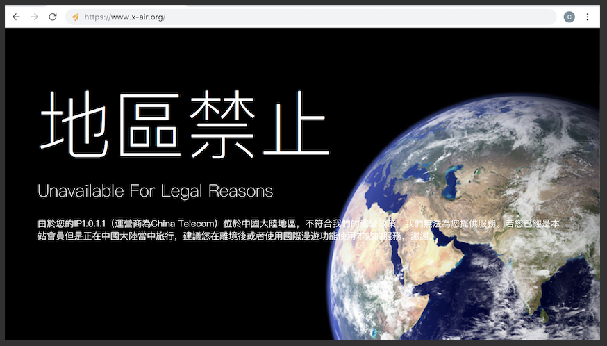
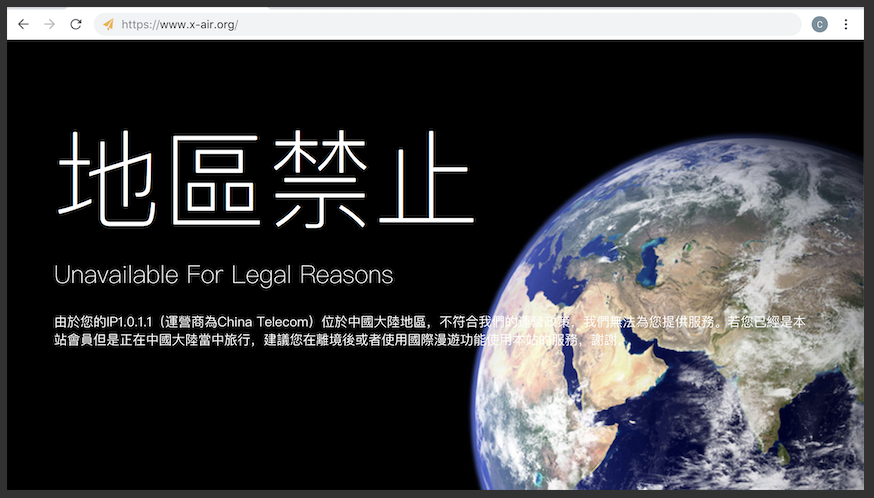

基础使用教程
1、登陆本站
因为防止黑客的僵尸网络攻击，我们不得不屏蔽中国大陆的IP。如果您身在中国大陆，请使用代理访问，否则将会出现以下拦截界面：
如果您是在是无法访问，你可以尝试在地址后面加上一个unlock_now=1参数，例如：
https://www.x-air.org/login?unlock_now=1
之后的一段时间内就能够正常地访问了
但是请注意：这个方法只能做应急使用，切不可滥用！
接下来您便可以点击主页右上方的登陆或者注册进入本站的控制面板了
因为防止黑客的僵尸网络攻击，我们不得不屏蔽中国大陆的IP。如果您身在中国大陆，请使用代理访问，否则将会出现以下拦截界面：
如果您是在是无法访问，你可以尝试在地址后面加上一个unlock_now=1参数，例如：
https://www.x-air.org/login?unlock_now=1
之后的一段时间内就能够正常地访问了
但是请注意：这个方法只能做应急使用，切不可滥用！
接下来您便可以点击主页右上方的登陆或者注册进入本站的控制面板了